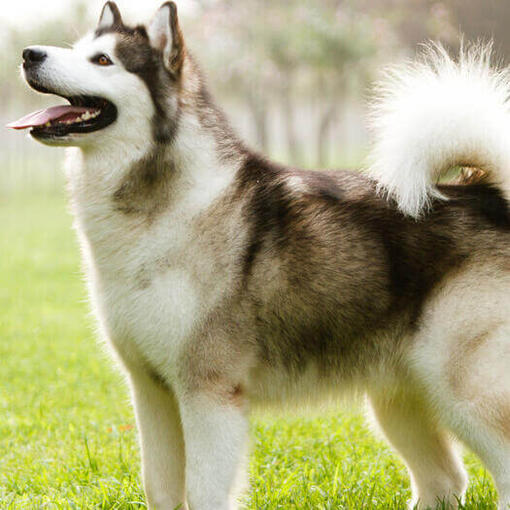

Alaskan Malamute
Ideal para: Familias activas
Fuerte, amable y devoto.
Esperanza de vida: 10-14 años
Nivel de energía: Alto
Este gigante del norte fue criado para tirar trineos pesados en condiciones extremas. Son perros fuertes y resistentes que necesitan espacio y mucho ejercicio. No esperes un perro de sofá: el Alaskan Malamute es un atleta que quiere trabajar y explorar. Son afectuosos con su familia, pero su instinto de manada es fuerte y necesitan un líder firme.